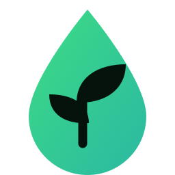

Home Assistant · HACS-Integration · English version →Starre Zeitpläne wässern im Regen, lassen den Rasen in der Hitzewelle verdursten — und schweigen, wenn ein Ventil klemmt. Das hier nicht: Es wägt Bodenfeuchte, Vorhersage und Wartezeit jedes Kreises ab und erklärt seine Entscheidung in einem Klartext-Satz. Und es lässt niemals ein Ventil offen.
Einmal die Bewässerungszeit einstellen. Alles Weitere läuft von selbst — und du kannst bei jedem Schritt mitlesen.
Bodenfeuchte-Sensoren (optional), die Vorhersage deiner Wetter-Integration und der gemessene Regen der letzten 24 Stunden. Was fehlt, wird sauber umgangen — und dazugesagt.
Alle 30 Minuten bekommt jeder Kreis einen Score von 0–100: trockener Boden, heiße Vorhersage und lange nicht bewässerte Kreise treiben ihn hoch; Regen — gefallen oder angekündigt — setzt ihn aus. Aus dem Score werden die Minuten für heute Abend, aus der Begründung ein Klartext-Satz auf deinem Dashboard.
Zur eingestellten Zeit laufen die Kreise der Reihe nach (oder parallel, wo die Leitungen es hergeben). Topfpflanzen bekommen stattdessen tagsüber kleine Dosen. Fünf Sicherheitsschichten überwachen jedes einzelne Ventil.
Das ist die echte Formel der Integration — kein Mock-up. Zieh an den Reglern und beobachte, wie die Entscheidung kippt.
Jeder Kreis hat einen Status-Sensor mit der Entscheidung im Klartext — „Score 72 → 16 min“ oder „Regen-Veto“. Keine Blackbox, kein Rätselraten, warum der Rasen trocken blieb. Ein Hub-Sensor fasst den ganzen Tag in einer Zeile zusammen: Vorhersage, Regen, Bodenfeuchte aller Kreise, Berechnungszeitpunkt.
Gefallener — oder angekündigter — Regen lässt den Lauf ausfallen. Hitzewellen und lange nicht bewässerte Kreise treiben ihn hoch. Feuchter Boden über deiner Schwelle stoppt ihn komplett. Optional bewertet echte Verdunstung (ET₀ nach Hargreaves aus Sonnenstand + Vorhersage) den Durst — ohne zusätzliche Sensoren.
Topfpflanzen trocknen in Stunden aus, nicht in Tagen. Topf-Kreise bekommen tagsüber kleine Dosen, die die Feuchte im Soll-Band halten — mit Mittagssonnen-Sperre und Tageslimit.
Kreise per UI anlegen, bearbeiten, löschen — jeder mit eigenen Ventilen, Sensoren, Grenzen und Schwellen. Zwei Ventile können sich einen Kreis teilen und nacheinander laufen.
Mit einem Durchfluss-Sensor je Kreis bekommst du Liter pro Sitzung, Tag und Monat — und die Monatskosten aus deinem Wassertarif.
Heute überspringen, Urlaubsmodus, Boost-Modus, Kreise einzeln pausieren. Jede Schwelle und jedes Gewicht ist ein Regler in der UI — sinnvolle Defaults, kein YAML nötig.
Kein proprietärer Controller, kein Hub zu kaufen. Was Home Assistant schalten kann, kann hiermit gießen.
| Du hast | Was gebraucht wird |
|---|---|
| Bewässerungsventile | Jedes Ventil, das als Switch erscheint — Zigbee, WLAN, Z-Wave, Relais-Boards. (valve.-/light.-Entities: Einzeiler-Wrapper-Rezept in der FAQ.) |
| Wetter | Jede Wetter-Integration mit Vorhersage — Met.no (eingebaut), AccuWeather, DWD, … Das ist die einzige harte Voraussetzung. |
| Bodenfeuchte-Sensoren | Optional. Jeder %-Sensor, jede Marke, mehrere pro Kreis. Ohne sie rechnet der Score nur mit Wetter und Durst-Tagen. |
| Regenmesser, Globalstrahlung, Durchflussmesser | Optional. Ein Regensensor schärft das Regen-Veto, Strahlung aktiviert die Mittagssonnen-Sperre für Töpfe, ein Durchflussmesser schaltet Liter & Kosten frei. |
Ein Trockenheits-Report zum Kaffee, eine Plan-Nachricht vor dem Lauf, der Lauf selbst zur Wunschzeit — und Topf-Dosen dazwischen.
Funk-Ventile fallen auf kreative Arten aus. Jede Schicht unten existiert wegen eines echten Vorfalls in dem Garten, in dem das hier entstanden ist.
Jedes Schließen wird wiederholt, bis das Ventil wirklich „aus“ meldet — ein Funk-Aussetzer im falschen Moment kann kein Wasser laufen lassen.
Wenn ein Lauf endet — normal, abgebrochen oder abgestürzt — geht ein letzter Schließbefehl an alle Ventile. Meldet eins noch „offen“, weiß es dein Handy.
Ventil vom Dashboard geöffnet und abgelenkt worden? Es schließt sich nach deiner Standard-Dauer von selbst. Ein harter Watchdog zwangsschließt alles, was länger als das Notaus-Limit offen ist — egal, wer es geöffnet hat.
Home Assistant mitten in der Bewässerung neu gestartet? Verwaiste Ventile werden gefunden, sobald das Funknetz zurück ist — und sofort geschlossen.
Ein Knopf bricht alles ab und schließt jedes Ventil mit Wiederholversuchen. Ein Ventil, das nicht bestätigen kann, zählt als offen — du wirst informiert, nicht beruhigt.
Angefangen hat das als Automation eines einzelnen Haushalts: zwei Rasenzonen, eine Beeren-Tropfleitung und ein Tomatentopf, über ganze Saisons hinweg. Die Defaults sind die Werte, die sich dort bewährt haben — und die Sicherheitsschichten existieren, weil Ventile wirklich hingen, Funk wirklich abriss und Home Assistant wirklich mitten in der Bewässerung neu startete. Dann wurde alles für beliebige Hardware neu gebaut — offen, unter MIT.